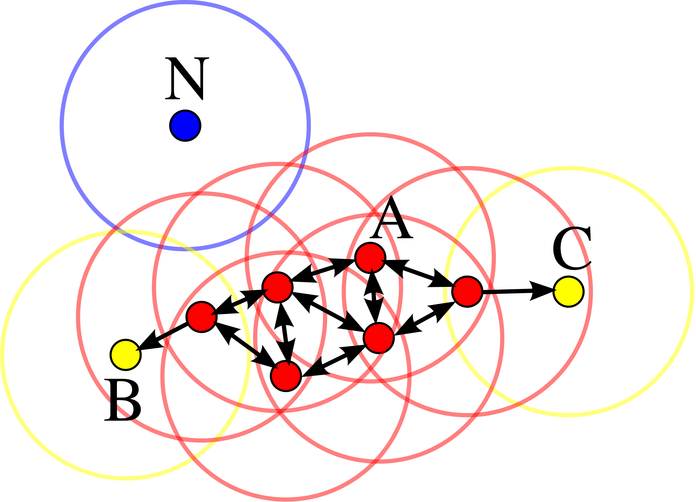

Definition
DBSCAN (for Density-based spatial clustering of applications with noise) is a density based clustering method that computes for each point in the dataset its neighbours based on a given distance \(\varepsilon\).
\(\varepsilon\) is an hyperparameter of DBSCAN and the other hyperparameter of the model is \(min_{points}\).
Notations
- Two data points \(p\) and \(q\) are considered neighbours if \(D(p, q) \lt \varepsilon\) where \(D\) is a given distance measure (euclidian distance for example),
- A point \(p\) is a core point if at least \(min_{points}\) neighbours, ie \(min_{points}\) points which are within a distance \(\varepsilon\) of it (including \(p\)),
- A point \(q\) is directly reachable from \(p\) if point \(q\) is within distance \(\varepsilon\) from core point \(p\). Points are only said to be directly reachable from core points,
- A point \(q\) is reachable from \(p\) if there is a path \(p_1, \ldots, p_n\) with \(p_1 = p\) and \(p_n = q\), where each \(p_{i+1}\) is directly reachable from \(p_i\). Note that this implies that the initial point and all points on the path must be core points, with the possible exception of \(q\).
A cluster is thus a set of close core points with distance less than \(\varepsilon\) and non core sample but having a distance less than \(\varepsilon\) to at least one core point.
Data points with distance more than \(\varepsilon\) to every core points are considered outliers.
Visual representation

In this diagram, \(min_{points}=4\). Point \(A\) and the other red points are core points, because the area surrounding these points in an \(\varepsilon\) radius contain at least 4 points (including the point itself). Because they are all reachable from one another, they form a single cluster. Points \(B\) and \(C\) are not core points, but are reachable from \(A\) (via other core points) and thus belong to the cluster as well. Point \(N\) is a noise point that is neither a core point nor directly-reachable. From DBSCAN Wikipedia page.
Pseudo code
- Associate all points to cluster -1 (outliers)
- Initialize the current cluster number \(C\) to 1
- For each point \(p\) in dataset:
- \(N := \text{neighbours of } p\) (ie points at a distance from \(p\) less than \(\varepsilon\))
- if \(\vert N \vert \gt min_{points}\):
- if \(cluster(p) = -1\):
- \(cluster(p) := C\),
- \(C := C + 1\),
- for each point \(p'\) in \(N\) (neighbours of \(p\)):
- \(cluster(p') := cluster(p)\).
Pros and cons
Pros
- Can cluster different structure shape,
- Average complexity: \(O(nlog(n))\),
- Automatically selects the number of clusters.
Cons
- Sensitive to hyperparameters (particularly eps)
KD tree
KD tree is a method to avoid computing the whole distance matrix (ie to compute for each point its distance to every other point).
KD tree build a data structure that organises the data into a tree structure.
Pseudo code
- Pick random feature x,
- Find the median to split the data set (half the data will have a value x greater than the median),
- Repeat until you have a predetermined number of points in each branch
Ressources
See: